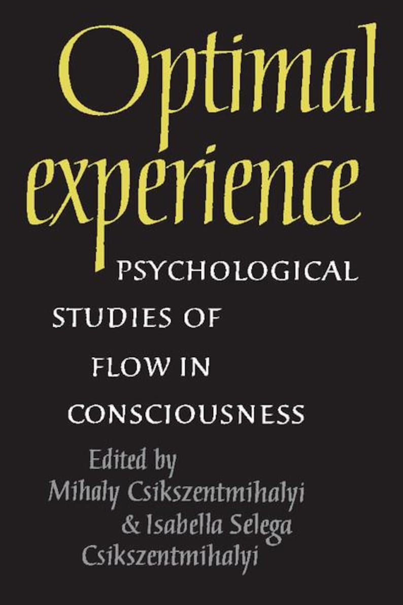

Library › Psychology & People
Flow — Summary & Key Lessons

The psychology of optimal experience — happiness isn't found; it's engineered through total absorption in worthy challenges.
📖 OPEN THE FULL INTERACTIVE BREAKDOWN →🌐 Read it in Hindi, Hinglish, Gujarati, Tamil & 22 more languages — free, with audio.
💡 The Big Idea
Csikszentmihalyi's decades of research — including the Experience Sampling Method: beeping thousands of people at random moments to record what they were doing and feeling — produced psychology's most counterintuitive happiness finding: people's BEST moments occur not in leisure but in FLOW — the state of total absorption when a person's skills fully engage a challenge just beyond comfort. The conditions: clear goals, immediate feedback, challenge-skill balance; the experience: merged action and awareness, vanished self-consciousness, transformed time, and the activity becoming AUTOTELIC — worth doing for itself. The radical implications: happiness is not a state to find but a condition to BUILD (attention is the tool — 'the shape and content of life depend on how attention has been used'); psychic entropy (the mind's default drift toward worry and disorder) is the enemy; and any life — work, chores, suffering included — can be redesigned into flow's raw material by the person who controls their consciousness.
🧠 The 6 Key Lessons
Lesson 1: Psychic Entropy vs. Optimal Experience: The Battle for Attention
Chapters 1–2: Happiness Revisited / The Anatomy of Consciousness
The framework beneath everything: consciousness can hold a sharply limited amount of information (attention is the currency — perhaps 126 bits per second against the millions available), and its DEFAULT state is disorder: PSYCHIC ENTROPY — the untasked mind drifting reliably toward worries, grievances, and vague dread (why 'free time' so often feels worse than work; why the beeper studies caught people at their unhappiest during unstructured leisure). ORDER in consciousness — attention fully invested in a coherent goal — is its opposite and its cure: optimal experience is, structurally, attention so completely deployed that no bandwidth remains for entropy's programming. The consequences Csikszentmihalyi draws: the quality of life is decided not by what happens but by what attention does with it ('a person can make himself happy or miserable regardless of what is actually happening outside'); and since attention shapes the self which then directs attention, the loop is ownable: controlling consciousness is the fundamental life skill — every tradition's 'mastery of self' named in information-theoretic terms.
📖 Example: The Experience Sampling data supplies the shocks: beeped at random, people reported MORE flow at work than in leisure (the famous paradox — jobs provide goals, feedback, and challenge; the sofa provides entropy), and television — the leisure default —… Read the full example →
⚡ Do this: Run your own sampling: set three random daily alarms this week; at each, log the activity and rate absorption and mood. Find YOUR flow activities (the high-absorption entries) and your entropy pits (usually passive leisure). Then rebalance one hour daily from the pits toward the peaks.
Lesson 2: The Conditions of Flow: Goals, Feedback & the Challenge-Skill Channel
Chapters 3–4: Enjoyment and the Quality of Life / The Conditions of Flow
Flow's recipe, extracted from thousands of interviews — surgeons, rock climbers, chess masters, assembly workers — converges on the same elements: CLEAR GOALS moment-to-moment (the climber knows the next hold; ambiguity is flow's poison), IMMEDIATE FEEDBACK (each action reports its success instantly — the note sounds right or wrong, the stitch holds or doesn't), and the master variable: CHALLENGE-SKILL BALANCE — the channel between anxiety (challenge exceeds skill) and boredom (skill exceeds challenge), where engagement locks in. The experience that follows: action and awareness merge, self-consciousness evaporates (the inner critic requires bandwidth flow doesn't spare — hence the paradox that self-forgetting activities are the ones that STRENGTHEN the self afterward), time transforms (hours compress; seconds dilate), and the activity becomes AUTOTELIC — its own reward, want-to rather than have-to. The dynamic consequence: flow is a moving target — mastery raises skill, which demands raised challenge — making flow activities intrinsically GROWTH machines: the state and the improvement are the same event.
📖 Example: The rock climber's testimony threads the chapters: 'you're so involved in what you're doing you aren't thinking of yourself as separate from the immediate activity' — goals (the next hold), feedback (you're on the wall or falling), balance (routes graded… Read the full example →
⚡ Do this: Engineer one flow session this week: pick a skill activity, set a crystal-clear session goal, arrange instant feedback (timer, metrics, recording), and tune difficulty to 'just beyond comfortable.' Kill the interruptions — flow takes ~15 minutes to enter and one notification to exit. Then ratchet: each session, raise the challenge one notch behind your rising skill.
Lesson 3: The Autotelic Life: Making Work and Leisure Flow
Chapters 5–8: The Body in Flow / Thought / Work / Solitude and Company
The application tour: the BODY as flow instrument (sports, yoga, walking, even eating — each convertible from routine to flow by adding goals, technique, and attention: 'the walking man' who transforms commutes with route-challenges and observation games), the MIND likewise (memory, poetry, amateur science, conversation-as-craft — mental flow requiring only internalized rules and portable challenges: the prisoner-of-war chapters' astonishing testimonies of minds kept ordered through imagined chess and recited verse). WORK gets the pivotal reframe: the AUTOTELIC JOB — since work naturally supplies goals and feedback, the flow-seeking worker's move is redesigning the role's challenges (the assembly-line worker Rico who turned a 43-second task into a years-long optimization game, achieving flow — and records — where colleagues found only tedium); the deeper move is the AUTOTELIC SELF: the personality that converts whatever it faces into flow material by setting its own goals, tracking its own feedback, and owning its attention regardless of circumstances. And LEISURE's warning stands throughout: unstructured free time is entropy's home field — the flow-rich retrofit their leisure with the same architecture as their best work.
📖 Example: Rico Medellin is the book's working-class hero: a factory hand whose station allotted 43 seconds per unit, who spent five years training and tooling toward his personal record (28 seconds) — 'it's better than anything else,' he reports, in flow's exact… Read the full example →
⚡ Do this: Retrofit your least-liked recurring task Rico-style: invent the metric, chase the personal record, study the technique — turn the 43 seconds into a game. Then audit your leisure with the flow checklist (goals? feedback? challenge?) and upgrade one passive hour into an active one: the instrument, the craft, the sport, the deliberate conversation.
Lesson 4: Flow Through Chaos: Dissipative Structures & the Meaning Thread
Chapters 9–10: Cheating Chaos / The Making of Meaning
The hardest test: flow under catastrophe. Csikszentmihalyi's studies of people who thrived through blindness, paralysis, imprisonment, and loss identify the trait he names TRANSFORMATIONAL COPING — the 'dissipative structure' personality that metabolizes disorder into new order: unselfconscious self-assurance (attention aimed at the situation, not the ego's injury), openness to the environment (studying what IS rather than mourning what was), and the discovery of NEW GOALS inside constraints the old goals didn't survive (the paraplegic athletes and blind meditators who — the interviews' most stunning refrain — describe their catastrophe as a turning point toward richer purpose). The finale scales flow to a lifetime: individual flow moments, however frequent, can still sum to a fragmented life; the completion is the LIFE THEME — one unifying purpose that links every activity into a single grand flow project (the entropy-to-order conversion applied to one's whole biography), turning existence itself into the ultimate autotelic activity. 'The meaning of life,' his closing arithmetic runs, 'is meaning: whatever it is, wherever it comes from, a unified purpose is what gives meaning to life.'
📖 Example: The interviews carry the chapter: Lucio, paralyzed in a crash, who calls the accident 'a new birth' — the constraint forcing goal-reconstruction that his drifting able-bodied years never demanded; the blind respondents cataloguing gains in attention and… Read the full example →
⚡ Do this: Draft your life theme in one sentence: the purpose that could connect your work, relationships, and recovery from whatever hits. Test each major commitment against it — the disconnected ones are your fragmentation. And bank the transformational-coping protocol before you need it: situation-focus over ego-focus, study over mourning, and the question that rebuilt every survivor in the book: 'what goals does THIS reality make possible?'
Lesson 5: The Flow State: What It Feels Like When You're Fully Alive
Part 1: The Experience
Csikszentmihalyi spent decades studying when people feel their best — and found it wasn't during leisure or passive consumption, but during 'flow': total absorption in a challenging activity. The markers of flow are universal: complete concentration, loss of self-consciousness, distorted time, clear goals, and the sense that the activity is worth doing for its own sake. Athletes call it 'the zone'; artists call it inspiration; it is actually a trainable state. The practical point: you can design your life to have more flow by choosing activities that match your skills against a worthy challenge — and by treating attention as the most precious resource you own.
📖 Example: Csikszentmihalyi's research subjects — surgeons, rock climbers, chess players, dancers — all described the same experience in almost the same words: the world drops away, time disappears, and the self merges with the activity. The common condition was never… Read the full example →
⚡ Do this: Recall one activity where you lose track of time. Schedule 90 minutes of it this week — deliberately, like a meeting — and note how you feel afterward.
Lesson 6: The Flow of Work: Transform Your Job Into Play
Part 2: The Application
Most people assume work and flow are opposites — work is drudgery, flow is play. Csikszentmihalyi's data says otherwise: people in flow states report the highest quality of experience, and they find it more often at work than at leisure. The reason: work provides structure — clear goals, feedback, challenges — that leisure often lacks. The transformation happens when you treat your job as a craft to master rather than a task to endure: set personal challenges within it, find the skill in it, take ownership of its quality. Any job can become a flow activity if you bring the autotelic attitude — loving the activity for itself.
📖 Example: Csikszentmihalyi describes a factory worker who made every weld perfectly, treating each one as a personal test — and an assembly-line worker who redesigned his routine as a game. Their external circumstances were identical to their bored colleagues'; their… Read the full example →
⚡ Do this: Pick one routine part of your job and set a personal challenge within it this week — a faster time, a higher standard, a new technique — and pursue it like a game.
✅ 5-Step Action Plan
- Sample your week; shift one hour daily from entropy pits to flow peaks.
- Engineer weekly flow sessions: goals, feedback, calibrated challenge.
- Retrofit one dead task Rico-style; upgrade one passive leisure hour.
- Write the life theme; audit commitments for fragmentation.
- Pre-install transformational coping: 'what does THIS make possible?'
⚠️ When This Doesn't Work
Csikszentmihalyi calls flow the optimal experience — but flow is morally blind. Bernie Madoff was in perfect flow for thirty years: total absorption, clear goals, instant feedback, skill perfectly matched to challenge. The most focused man on Wall Street was running the largest fraud in history. Flow amplifies whatever you're flowing into. Before you optimise for absorption, check what the absorption is producing — a beautiful flow state pointed at the wrong thing is a beautiful disaster.
💀 The Graveyard Proves It
🎩 Bernie Madoff — The $65 Billion Lie That Ran 30 Years. Burn: $65B — history's largest Ponzi. Read the full case study →
💬 Best Quotes from Flow
- “The best moments in our lives are not the passive, receptive, relaxing times... The best moments usually occur if a person's body or mind is stretched to its limits in a voluntary effort to accomplish something difficult and worthwhile.”
- “Control of consciousness determines the quality of life.”
- “A person can make himself happy, or miserable, regardless of what is actually happening 'outside,' just by changing the contents of consciousness.”
Interactive version: mark lessons as read, listen in your language, share quote cards.